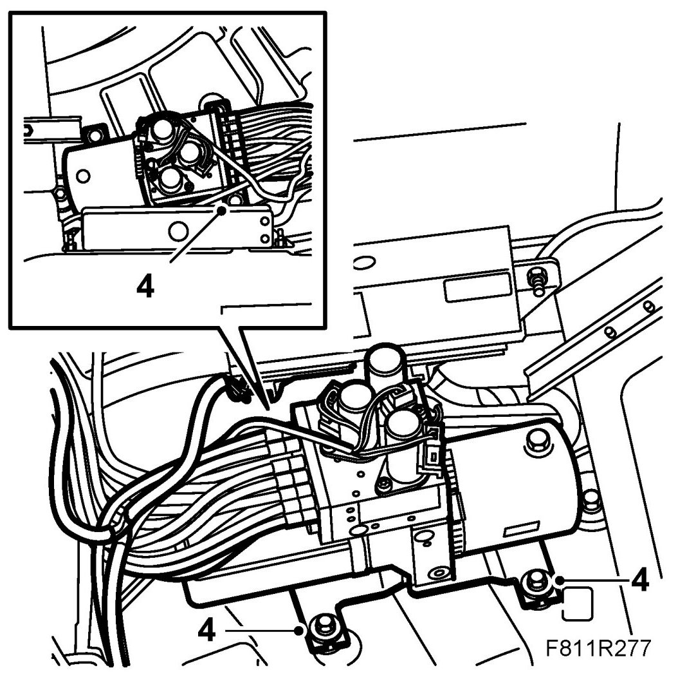
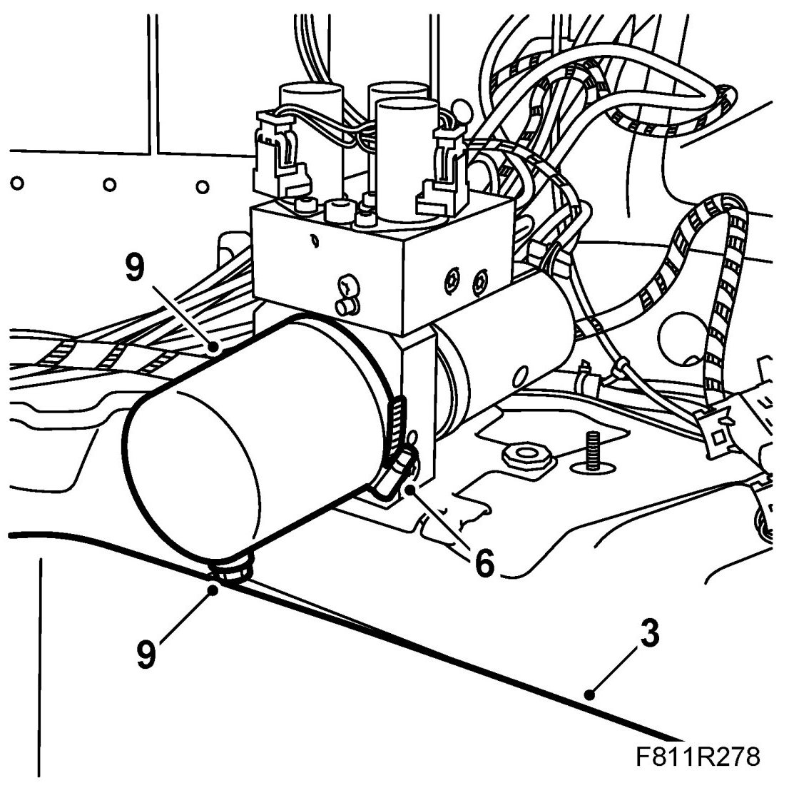
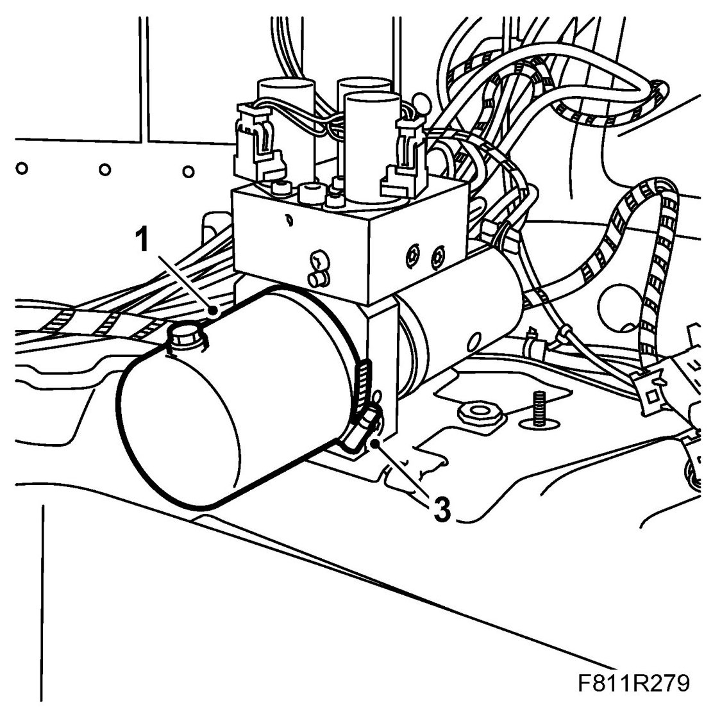
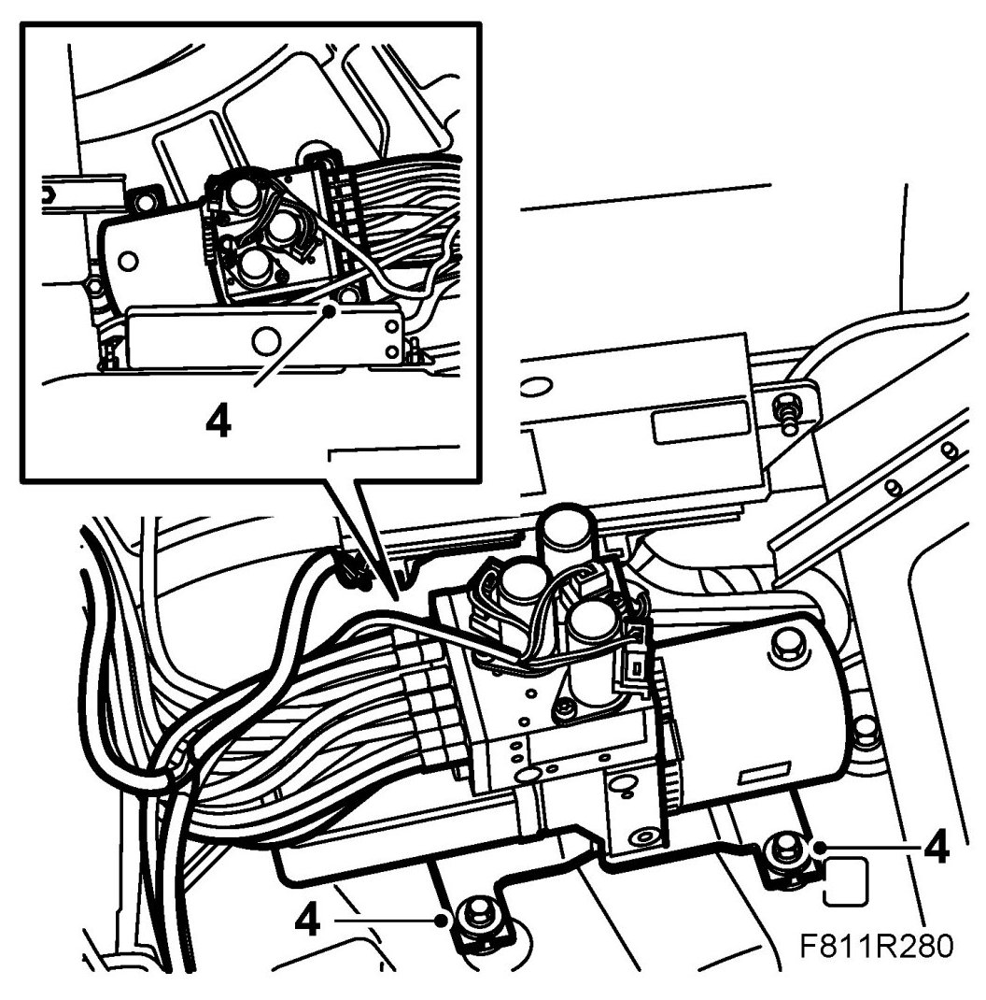

Convertible Top Reservoir: Service and Repair
Hydraulic Unit, Fluid Reservoir
Removing
1. Close the soft top completely.
2. Remove Luggage compartment side trim, CV (right-hand side only).
3. Take the spare wheel out of the luggage compartment. Place an oil receptacle in the space for the spare wheel.
4. Unscrew the hydraulic unit nuts.

5. Lift out the hydraulic unit somewhat so that the fluid reservoir is above the receptacle in the spare wheel space.
IMPORTANT: Lift up the hydraulic unit carefully so that the hydraulic hoses are not damaged.
6. Remove the hose clamp for the fluid reservoir on the hydraulic unit.

7. Turn the hydraulic unit fluid reservoir so that the oil filler plug is at the bottom.
8. Remove the oil filler plug. Allow the hydraulic fluid to run into a receptacle.
9. Remove the fluid reservoir from the hydraulic unit.
10. Remove the O-ring.
Fitting
1. Fit the new O-ring. Lubricate the O-ring with a little hydraulic fluid. Place the hydraulic fluid reservoir in its mounting position.

2. Turn the hydraulic unit fluid reservoir so that the oil filler plug is up.
3. Fit the fluid reservoir hose clamp.
4. Place the hydraulic unit in mounting position. Fit the hydraulic unit nuts.

5. Fill the reservoir to MAX with fluid.
See Checking/filling oil
Use 89 96 860 Power steering fluid.
IMPORTANT: Never use the same fluid as in the Saab 900 Cabriolet -M94
6. Open and close the soft top for 5 complete cycles to bleed the system and check its function.
7. Check for any fluid leaks.
8. Check the oil level and top up as necessary. See Checking/filling oil. Use 89 96 860 Power steering fluid.
9. Connect the diagnostics tool and erase any diagnostic trouble code.
10. Replace the spare wheel and fasten it.
11. Fit Luggage compartment side trim, CV